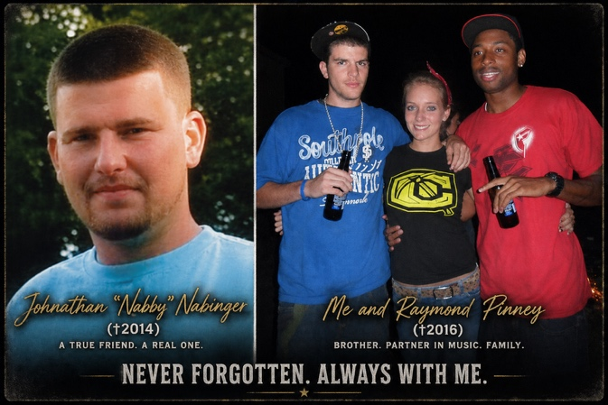
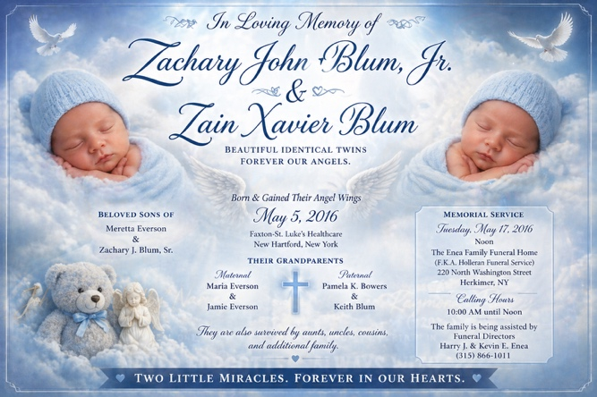
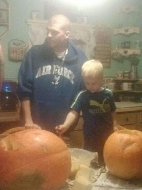
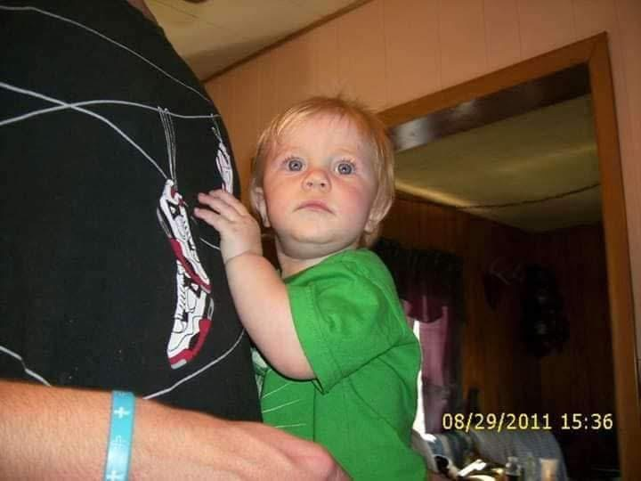
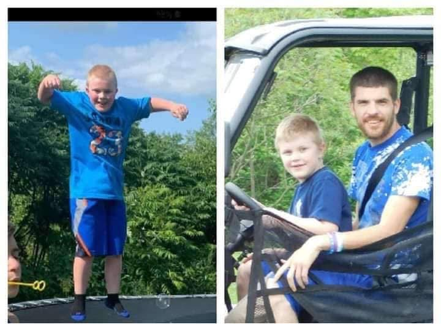
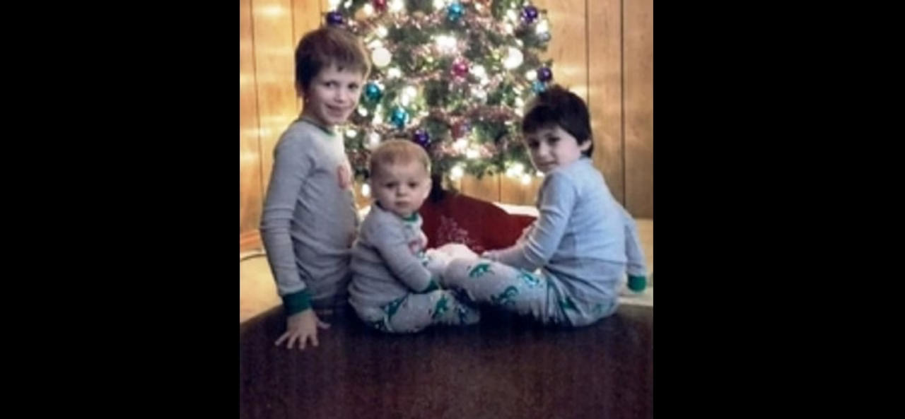
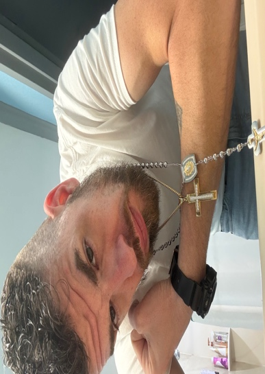

Independently owned and operated. Local-first coverage from Atlantic City with sourced national updates, coastal weather, faith, culture, and community reporting.
TRUTH OVER COMFORT • WE UP • INDEPENDENT VOICE
Washington, D.C. security incident at White House Correspondents’ Dinner — senior officials reported safe, suspect reportedly in custody, federal investigation developing.
BREAKING: Shooting / Security Incident Reported at White House Correspondents’ Dinner

Photo Credit: Official White House / Wikimedia Commons — Donald Trump official portrait. File image used until verified event imagery is available.
Major outlets are reporting that the White House Correspondents’ Dinner at the Washington Hilton was disrupted by a shooting or security incident. Early reporting says senior officials were secured or evacuated by law enforcement.
Editorial standard: This is a developing story. Early claims should be handled cautiously until confirmed by official law enforcement or White House statements.
Verified Video Sources
Official and reliable video links are used to avoid broken embeds or mismatched footage.
Watch AP News Video Updates Watch White House Official VideosTRUTH WITH TEETH
No Fear. No Favor. Just Facts.
Independent reporting, sourced briefs, local culture, faith, weather, and accountability from Atlantic City.

Order early for Mother’s Day — available while the drop is live.
Founder Biography Preview
Zachary J. Blum — BigRooster built BlackSheep Patriots News from survival, loss, fatherhood, faith, mistakes, rebuilding, and the belief that truth matters more than comfort.
This preview highlights the story behind the platform without taking over the homepage. The full biography is available in the Biography tab.
Read Full Biography




Biography Tab: Becoming BigRooster — The Full Story of Zachary J. Blum
Zachary J. Blum — BigRooster is the founder of BlackSheep Patriots News and BigRooster Media. His story is built from survival, fatherhood, grief, mistakes, accountability, rebuilding, faith, and the mission behind an independent media platform rooted in Atlantic City and South Jersey.
Biography Photo Gallery
Full biography photo gallery featuring images from Zachary J. Blum’s story, family, sons, friends, and life journey.


Early Life
I was born in Ilion, New York in September 1989. From the beginning, life did not come slow or easy — it came fast, unpredictable, and heavy.
At five years old, I moved with my mother to Canton, New York. That is where I grew up tough — playing football, lacrosse, hockey — riding dirt bikes, snowmobiles, four-wheelers, and anything with wheels or an engine. I lived outside, constantly moving, learning early that staying still was not an option.
In 2002, everything shifted. We moved to Greenville, South Carolina. Different environment, different energy — but something in me never settled there.
Hard Lessons and Turning Points
At 14 years old, trying to find identity, structure, and belonging in a place that did not feel like home, I made a decision that pulled me in the wrong direction. I became involved with a gang in the Greenville area. At that age, it felt like loyalty, protection, and purpose. Looking back, it was the beginning of a path that came with consequences, lessons, and realities I had to face head-on.
By August 25, 2005, at just fifteen years old, I made one of the biggest decisions of my life. I left my mother’s house and went back to Herkimer, New York to live with my father, Keith Blum. My aunt and uncle, Darlene Brewer and Dale Brewer Sr., helped me make that turning point happen.
Friends, Music, and Loss
Back in Herkimer, I found my people. Johnathan “Nabby” Nabinger and Raymond Pinney were not just friends — we were together every day. We grew up side by side through our teenage years and into our early twenties. Raymond and I spent years making rap music, building something creative out of where we came from.
Losing Nabby in 2014 and Raymond in 2016 hit deeply. Those losses were not just moments — they were turning points. They shaped how I move, how I think, and how I carry everything forward.
Fatherhood
In 2010, my son Miguel was born in Ilion, New York. His mother and I raised him together as a co-parenting team, even while living separate lives. For the first nine years of his life, I was consistently present — showing up, learning what it meant to be a father, and doing my part alongside his mother to raise him the best we could.
Over time, things became unstable. After the loss of my twin sons in 2016, my life took a turn. Mentally, emotionally, and environmentally, I was not in a place that I felt was right for raising a child the way he deserved. I made one of the hardest decisions of my life and stepped back so Miguel could have stability with his mother full-time. Not because I did not love him — but because I did.
Loss Upon Loss
In 2016, my identical twin sons — Zachary John Blum Jr. and Zain Xavier Blum — were born on May 5, 2016. They passed away the same day. There are no words that fully explain that kind of pain. It is not something you move past — it becomes part of you.
Then in January 2019, my nephews died in a house fire in Herkimer, New York. Loss stacked on loss, year after year. The kind of weight that breaks most people. I did not break.
The Raleigh Decision
After everything I had been through, I called my father, Keith Blum, and asked him for help getting out. He bought me a Greyhound bus ticket to Charlotte, North Carolina. At around 5:25 in the morning in Raleigh, I was sitting there with that ticket — and something in me said: stop.
I walked to the counter and asked, “How much is a ticket to Myrtle Beach?” It was thirty-three dollars. I took it. That decision changed my life. I landed in Myrtle Beach, found two jobs, got stable, and started rebuilding from nothing.
More Trials and the Road Back
In October 2019, someone I was close with, Khrystina, stopped responding. Days later, I saw her face tied to a story about a murdered newborn. She had told me the baby was mine. The timeline matched. I contacted law enforcement, was brought in, questioned, and left carrying even more weight.
Life became movement again — New York, Myrtle Beach, Florida, kitchens, construction, hard labor, and survival. In October 2021, I returned to New York, made mistakes, and paid for them. I served a year in state prison and completed parole. Then I got back to work.
In early August 2025, I was involved in a motorcycle accident that disrupted everything. I still kept going, working at a Walmart Distribution Center through August and September. Stopping has never been an option.
Atlantic City and the Mission
After everything, I reconnected with Jordan. I told her there was nothing left for me where I was. She asked where I wanted to go. I did not know that night, but I woke up the next morning with the answer: Atlantic City, New Jersey. We got on a train and made the move. No guarantees. No safety net. Just belief.
In Atlantic City, I built BlackSheep Patriots News from the ground up. No funding. No team. No backing. Just me. I designed it, wrote it, built it, and published it. At the same time, I returned to school, pursuing communications while actively living it every day.
Before that, I built an audience through AI-driven video content. Now BigRooster Media operates across journalism, video, and merchandise as a full independent brand rooted in South Jersey.
WE UP
Everything I have been through — bad decisions, loss, pain, survival, rebuilding — built the foundation for what I am doing now. I do not speak from theory. I speak from experience.
This is not a finished story. I am still building. Still moving. Still becoming. WE UP.
Faith & God
A dedicated daily section for prayer, encouragement, gratitude, strength, family, community, and keeping faith at the center of the mission.
Psalm 46:1

“God is our refuge and strength, an ever-present help in trouble.”
Prayer for Strength

Lord, guide my steps today. Give me wisdom, discipline, courage, patience, and peace. Amen.
Today’s Encouragement

Stay grounded. Stay grateful. Keep moving with purpose. One faithful step at a time still moves you forward.
Founder Spotlight


Zachary J. Blum (BigRooster) — Independent journalist and founder of BlackSheep Patriots News.
Merch
Official BlackSheep Patriots merch. Simple, direct, and supports the platform.
Mother’s Day T-Shirt — Patriot Mom Edition
New Mother’s Day shirt now available. Patriot Mom design with pink sleeves, rooster graphic, and BlackSheep Patriots message.
View Pink Mother’s Day Shirt in Store

Homepage News Dashboard
Quick previews only. Click a tab or card to open the full section, article, data board, source hub, or contact page.
Developing National Story
Top alert, source notes, and verified video/source links.
Click to open full breaking coverage.
Atlantic CityLocal Events / Tourism / Culture
Kane Brown highlight, casino activity, local shows, Boardwalk notes, and visitor impact.
Click to read the full Atlantic City section.
FounderZachary J. Blum Biography
Survival, loss, fatherhood, faith, rebuilding, and the mission behind BlackSheep Patriots News.
Click to read the full biography.
Homepage Data & Section Previews
Homepage cards show quick visuals only. Viewers click a card to open the full section, article, data board, source hub, or contact page.
Events / Tourism / Boardwalk

Casino activity, live shows, entertainment, tourism, Boardwalk notes, and South Jersey culture.
Click for full Atlantic City coverage.
EconomyGDP / Jobs / CPI / Claims

Snapshot only. Full explanations and source links stay in the economy tab.
StocksSPY / QQQ / DIA

QQQ +1.93% • DIA -0.17%
Click for the full stock exchange board.
TradeImports / Exports

Imports, exports, ports, shipping, and trade balance preview.
Click for full trade board.
Weather / OceanSouth Jersey Coastal Stats

Wind, tides, surf, water temperature, rip-current risk, fishing, and Boardwalk conditions.
Click for full weather/ocean desk.
Job MarketLabor / Hiring / Claims

Quick labor-market preview. Click for the full job market section.
GovernmentWhite House Desk

Official releases, briefings, videos, and policy messaging organized separately from commentary.
Click for full White House tab.
DefensePentagon / CENTCOM

Official U.S. Central Command links, regional updates, video/image hub, and defense-source separation.
Click for full defense tab.
VideosReliable Source Hub

AP, White House, CENTCOM, NOAA, NWS Mount Holly, and Visit Atlantic City source buttons.
Click for videos and official sou: Weekend Events & Kane Brown Highlight
Atlantic City’s weekend entertainment schedule brought live shows, casino traffic, nightlife, and national music attention to the Boardwalk. Kane Brown’s Atlantic City stop at Hard Rock Live at Etess Arena was a major entertainment highlight.
Happening Today — Sunday, April 26
80's Live
Time: 4:00 PM
Venue: Harrah's Atlantic City
The Hook
Time: 7:00 PM
Venue: The Hook at Caesars Atlantic City
Audio Riot at Lobby Bar
Time: 4:00 PM – 7:30 PM
Venue: Hard Rock Hotel & Casino Atlantic City
Tomorrow — Monday, April 27
AC Jokes
Time: 8:00 PM
Venue: Resorts Atlantic City — The Screening Room
Atlantic City Walk of Fame Class of 2026
Date: April 27
Category: Local culture / entertainment
Plan Around Weather & Parking
Check parking, casino event details, roadwork, and coastal wind conditions.
Kane Brown Atlantic City Weekend Highlight
Kane Brown performed in Atlantic City at Hard Rock Live at Etess Arena on April 24, adding national country music attention to the city’s entertainment calendar.
Kane Brown — Official Video
Video Source: KaneBrownVEVO / YouTube — official related video. Not presented as Atlantic City concert footage.
Sources: AtlanticCity.com April events • Hard Rock AC calendar • Kane Brown official
White House Desk: Official releases and economic messaging
Official messaging should be reported clearly, then compared with independent data such as jobs, inflation, GDP, household costs, and local impact.
Pentagon / CENTCOM Desk
Defense reporting should separate official statements from independent confirmation while watching effects on shipping, oil prices, service members, and regional stability.
U.S. Economy Board
Real GDP
+0.5%
Q4 2025 real GDP annual rate snapshot.
Unemployment
4.3%
Labor-market conditions snapshot.
CPI Inflation
3.3%
Consumer-price pressure snapshot.
Weekly Claims
214K
Weekly claims snapshot.
Economy Snapshot Graph
0.5%
178K
3.3%
214K
Visual scale is simplified for reader comparison; each metric uses its own unit.
Stock Exchange Watch
SPY
$713.94
+$5.50 / +0.78%
QQQ
$663.88
+$12.59 / +1.93%
DIA
$492.21
-$0.83 / -0.17%
Market Movement Graph
+0.78%
+1.93%
-0.17%
Market figures are a snapshot. Refresh before publication if markets are open.
South Jersey Coastal Weather & Ocean Desk
Coverage area: Atlantic City, Ventnor, Margate, Longport, Brigantine, Absecon Island beaches, Great Egg Inlet, and nearby Atlantic County coastal waters.
Rain / Wind / Coastal Impact
51°F
Wind: 20–30 mph (gusts 40+)
Rain: AM showers
Humidity: ~85%
Cold / Damp / Windy
43°F
Wind: 18–25 mph
Cloud Cover: 90%
Windy / Clearing Late
51° / 43°F
Wind: 22–30 mph
Rain Chance: 30% AM
Sunny but Windy
60° / 44°F
Wind: 15–25 mph
Sky: Mostly sunny
Atlantic County Ocean Report — Live Data
Atlantic City Station
NOAA 8534720
High: ~9:12 AM / 9:34 PM
Low: ~3:02 AM / 3:18 PM
Sea Temperature
48°F
Cold Atlantic water — hypothermia risk witho